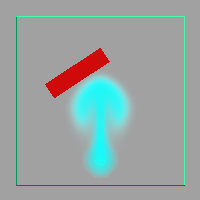

可以通过将几何体变为主动刚体来使用流体的力移动 NURBS 或多边形几何体。

使用流体的力移动几何体
- 创建动态流体。有关详细信息，请参见动态栅格(Dynamic Grids)。
- 将几何体移入流体容器。几何体必须位于容器内才能被流体所影响。
- 使几何体成为主动刚体（选择几何体，然后选择“柔体/刚体 > 创建主动刚体”(Soft/Rigid Bodies > Create Active Rigid Body)。有关创建刚体的详细信息，请参见 Maya 经典动力学。
- 在“性能属性”(Performance Attributes)下的“刚体”(rigidBody)“属性编辑器”(Attribute Editor)中，将“应用力于”(Apply Force At)设定为“质心”(centerOfMass)或“顶点或 CV”(verticesOrCVs)，具体取决于希望流体的力如何影响刚体。
- 选择流体容器和几何体（顺序并不重要）。
- 选择“场 > 影响选定对象”(Fields > Affect Selected Object(s))。
- 使用 Maya 窗口底部的播放控件播放模拟。
- 根据需要修改效果：
有关刚体属性的详细信息，请参见 Maya 经典动力学。
有关修改流体的详细信息，请参见修改流体。